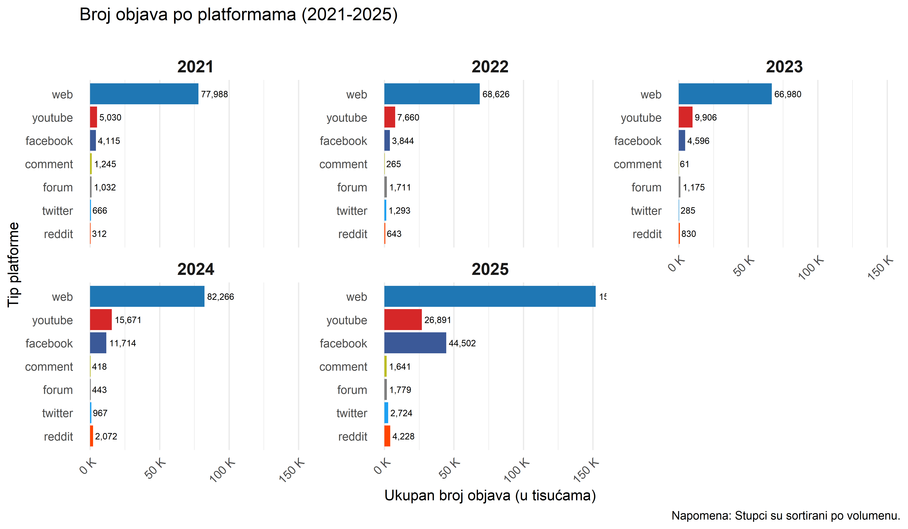
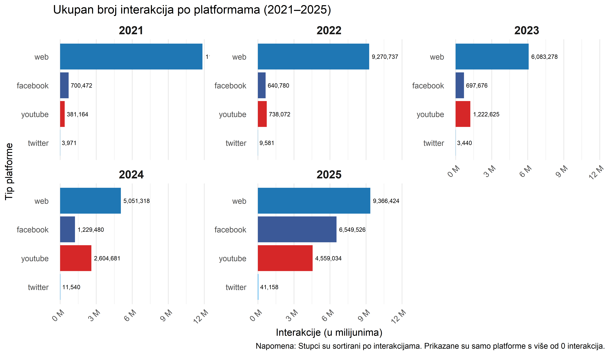
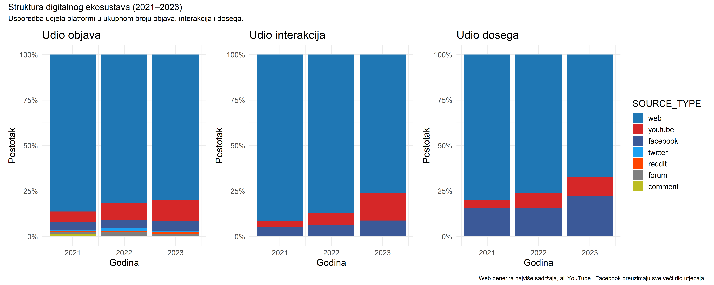
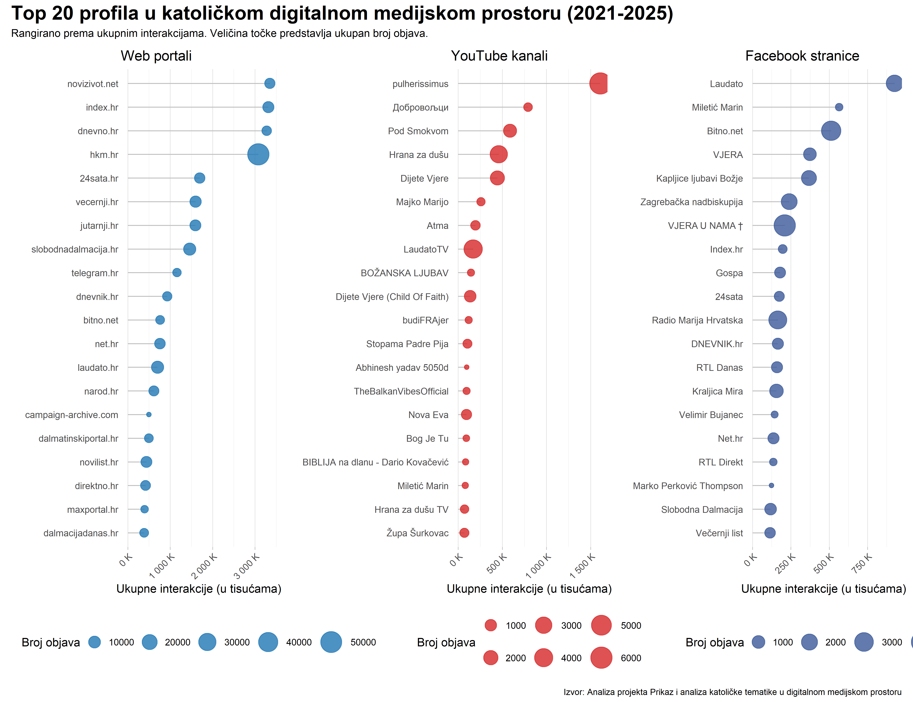
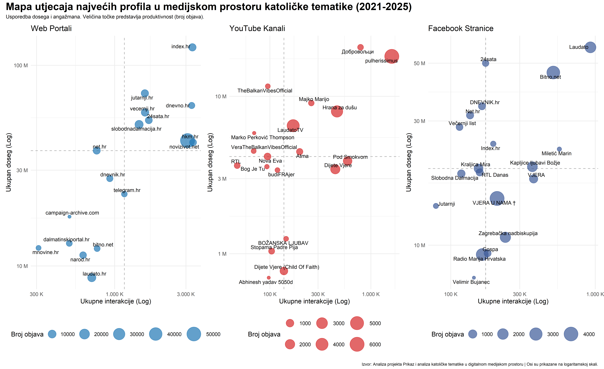

Mapa katoličkog digitalnog prostora u RH (2021-2025)
Mapiranje digitalne medijske arene
Ovaj dokument predstavlja prvu analitičku mapu projekta koji istražuje reprezentaciju katoličke tematike u digitalnom medijskom prostoru Hrvatske. Analiza obuhvaća korpus od preko 610.000 medijskih objava prikupljenih između 1. siječnja 2021. i 31. prosinca 2025. Cilj je dati pregled arene u kojoj se odvijaju rasprave o katoličkim temama.
Mapa koristi kvantitativnu analizu medijskog sadržaja kako bi se identificirale najvažnije karakteristike digitalnog katoličkog medijskog ekosustava. Analitički pristup strukturiran je u tri faze. Prva faza analizira platformske karakteristike prema volumenu produkcije, angažmanu publike i dosegu sadržaja. Druga faza identificira najproduktivnije i najutjecajnije medijske izvore. Treća faza sintetizira sve nalaze kroz sveobuhvatnu mapu utjecaja.
Tri temeljna pitanja vode ovo istraživanje. Gdje se odvija rasprava? Ovdje analiziramo glavne platforme, uključujući web portale, YouTube, Facebook i druge digitalne prostore. Tko su glavni akteri? Identificiramo najproduktivnije i najutjecajnije medijske izvore. Kakva je dinamika utjecaja? Uspoređujemo doseg i angažman kako bismo razumjeli različite strategije komunikacijskog djelovanja.
Prije nego što nastavimo, potrebno je definirati temeljne metrike. Pod volumenom podrazumijevamo ukupan broj objava, što reflektira produktivnost aktera. Angažman označava ukupne interakcije, odnosno zbroj lajkova, komentara, dijeljenja i sličnih reakcija publike. Doseg (reach) predstavlja ukupan broj korisnika koji su potencijalno vidjeli sadržaj.
Topografija digitalnog prostora
Razumijevanje ekosustava počinje analizom glavnih platformi. Svaka platforma nudi specifične komunikacijske mogućnosti koje oblikuju način na koji akteri proizvode sadržaj i način na koji publika reagira. Ovaj segment ispituje tri važna pokazatelja digitalne komunikacije:
Distribucija sadržaja po platformama
Grafikon koji slijedi prikazuje apsolutnu prevlast tradicionalnih web portala kao glavnih proizvođača sadržaja. Kroz sve promatrane godine web generira znatno više objava od svih ostalih platformi zajedno. Istovremeno je primjetan kontinuirani rast volumena sadržaja na YouTubeu, što upućuje na sve veću važnost video formata u komunikacijskim strategijama aktera.
Ova prevlast weba nije samo brojčana. Ona odražava ulogu tradicionalnih medija kao čuvara vijesti u hrvatskom društvu. Portali poput vecernji.hr brzo reagiraju na crkvene događaje, bilo da se radi o papinskim posjetima ili lokalnim blagdanima, stvarajući široku raspravu. Međutim, ta širina ponekad dolazi na račun dubine. Web portali postavljaju agendu za daljnju raspravu na drugim platformama i funkcioniraju kao primarni kanali distribucije informacija o katoličkoj tematici.
Distribucija angažmana publike po platformama
Iako web i dalje vodi u apsolutnom iznosu interakcija, YouTube i Facebook zauzimaju značajno veći udio u angažmanu nego što imaju u volumenu objava. Ovaj nalaz predstavlja prvi pokazatelj važne asimetrije. Web proizvodi najviše sadržaja, ali društvene mreže i video platforme uspješnije potiču direktan angažman publike.

Apsolutni brojevi korisni su za razumijevanje razmjera, ali relativni udjeli otkrivaju pravu dinamiku unutar ekosustava. Sljedeća vizualizacija stoga uspoređuje udio svake platforme u ukupnom broju objava, interakcija i dosega.
Relativna važnost platformi
Ova vizualizacija otkriva asimetriju utjecaja. Na lijevom panelu, koji prikazuje objave, web čini oko 80 posto svih objava. U srednjem panelu, koji prikazuje interakcije, udio weba pada na približno 70 do 75 posto, dok udio YouTubea raste i doseže gotovo 20 posto u 2023. godini. Na desnom panelu, koji prikazuje doseg, vidljiv je sličan trend gdje web gubi dio svoje prevlasti u korist društvenih i video platformi.

Asimetrija između volumena produkcije i ostvarenog angažmana ukazuje na različite mehanizme stvaranja utjecaja. Web portali prednjače kvantitetom sadržaja, dok vizualni i interaktivni formati na YouTubeu i Facebooku generiraju proporcionalno veći angažman po objavi. Ova dinamika sugerira da učinkovitost komunikacije ovisi ne samo o volumenu već i o komunikacijskim mogućnostima koje svaka platforma nudi te o strategijama pripreme sadržaja. Različite platforme omogućuju različite tipove interakcije, što rezultira različitim obrascima angažmana.
S ovim razumijevanjem platformske dinamike, analiza se sada može usmjeriti na pojedinačne aktere koji oblikuju ekosustav.
Najutjecajniji akteri u ekosustavu
Nakon makro pregleda strukturnih karakteristika prelazimo na identifikaciju najvažnijih pojedinačnih aktera unutar tri glavna ekosustava. Fokus je na web portalima, YouTube kanalima i Facebook stranicama kao primarnim arenama produkcije i distribucije sadržaja o katoličkoj tematici.
Rangiranje medijskih aktera prema metrikama angažmana
Prvo rangiranje aktera provodimo prema angažmanu publike, odnosno prema ukupnom broju interakcija. Rezultati pokazuju jasnu podjelu prema platformskim karakteristikama.
Na web platformi prednjače veliki mainstream mediji poput vecernji.hr, jutarnji.hr i index.hr, uz specijalizirane vjerske portale kao što je bitno.net. Ovi portali spajaju visoku produktivnost sa širokim dosegom i postavljaju agendu javne rasprave o katoličkoj tematici.
YouTube platformu karakteriziraju isključivo specijalizirani kanali. Među njima prednjače LaudatoTV, uz značajnu prisutnost pojedinačnih svećenika i župa. Ovi akteri grade dugoročne odnose s publikom kroz redovitu video produkciju.
Facebook scenu karakterizira mješavina mainstream medija i specijaliziranih stranica. To odražava hibridnu prirodu platforme koja spaja funkcije informiranja i povezivanja zajednice.
Veličina točke na grafikonu predstavlja produktivnost aktera mjerenu brojem objava. Ovaj vizualni element otkriva različite komunikacijske strategije. Neki akteri objavljuju puno sadržaja s manjim prosječnim angažmanom po objavi. Drugi objavljuju rjeđe, ali s izraženim odjekom. Ne postoji jedinstvena formula uspjeha. Važna je prilagodba strategije specifičnostima platforme i publike.

Ovi akteri nisu samo izvori sadržaja. Oni aktivno oblikuju javno mnijenje u digitalnom prostoru. Mainstream mediji poput jutarnji.hr služe kao most između sekularnog svijeta i vjerskih tema, prenoseći katoličku problematiku široj javnosti. Specijalizirani kanali poput LaudatoTV na YouTubeu nude intimniji prostor za duhovne razmjene, gdje publika aktivno sudjeluje kroz komentare i dijeljenja sadržaja. Ova diferencijacija uloga odražava kompleksnost katoličke tematike koja zahtijeva različite pristupe komunikaciji, od informativnog do formativnog.
S identificiranim akterima, konačna sinteza objedinjuje sve dimenzije u jednu integriranu vizualizaciju.
Mapa utjecaja najvažnijih aktera
Konačna sinteza analize koristi tipologiju digitalnog utjecaja koja pozicionira aktere prema dvije dimenzije, angažmanu (horizontalna os) i dosegu (vertikalna os). Ova tipologija identificira četiri osnovna arhetipa, odnosno idealna tipa aktera s distinktivnim komunikacijskim profilima.
Divovi, pozicionirani u gornjem desnom kvadrantu, ostvaruju istovremeno visok doseg i visok angažman. Ovi akteri predstavljaju apsolutne lidere ekosustava jer kombiniraju široku vidljivost s aktivnim angažmanom publike.
Graditelji zajednica, smješteni u donjem desnom kvadrantu, karakterizirani su niskim dosegom uz iznimno visok angažman. Ovi akteri grade duboke odnose s vjernom i aktivnom publikom, često se fokusirajući na specifične demografske ili tematske niše.
Megafoni, pozicionirani u gornjem lijevom kvadrantu, ostvaruju visok doseg uz nizak angažman. Njihov sadržaj vidi široka publika, ali taj sadržaj ne potiče nužno aktivnu raspravu ili interakciju.
Specijalizirani akteri, smješteni u donjem lijevom kvadrantu, fokusirani su na specifičnu, manju publiku s umjerenim dosegom i angažmanom. Ovi akteri često služe jako ograničene tematske ili geografske niše.
Osi grafikona prikazane su na logaritamskoj skali kako bi se bolje prikazao širok raspon vrijednosti i omogućilo smisleno uspoređivanje aktera različitih veličina.

Arhetip graditelja zajednica ilustrira snagu malih, ali predanih grupa u digitalnom prostoru. Župne Facebook stranice, primjerice, okupljaju lokalne vjernike oko svakodnevnih molitava i zajedničkih aktivnosti. Time pokazuju kako digitalni prostor može jačati stvarne zajednice umjesto da samo širi informacije. Ovi akteri ne teže maksimalnom dosegu. Umjesto toga, oni produbljuju odnose s postojećom zajednicom, što rezultira visokim stopama angažmana i lojalnosti. Njihova strategija ilustrira alternativni put do utjecaja koji ne ovisi o veličini publike već o kvaliteti odnosa.
Zaključak i sljedeći koraci
Provedena analiza razotkriva kompleksnu arhitekturu digitalnog medijskog prostora u kojoj se odvija rasprava o katoličkoj tematici. Tri glavna nalaza karakteriziraju ovu arenu.
Funkcionalna specijalizacija platformi. Web portali funkcioniraju primarno kao proizvođači sadržaja s visokim volumenom produkcije. Oni postavljaju agendu i brzo reagiraju na aktualne crkvene događaje. YouTube i Facebook predstavljaju arene pojačanog angažmana gdje se ostvaruje proporcionalno veći utjecaj po objavi. Ova specijalizacija odražava različite komunikacijske mogućnosti i očekivanja publike na svakoj platformi.
Jasna segmentacija aktera. Mainstream mediji prednjače u web prostoru i održavaju ulogu primarnih distributera informacija o katoličkoj tematici. Specijalizirani kanali i pojedinci preuzimaju vodeće pozicije na YouTubeu i Facebooku, gradeći dublje odnose s publikom kroz redovitu interakciju. Ova diferencijacija odražava različite strategije pristupa publici i komunikacijske paradigme, od informativne do formativne.
Višedimenzionalnost digitalne moći. Promatranje isključivo jedne metrike ne reflektira kompleksnost utjecaja koji akteri ostvaruju kroz različite kombinacije dosega, angažmana i produktivnosti. Različiti akteri uspijevaju kroz različite strategije, od masovne produkcije mainstream medija do fokusirane izgradnje zajednice specijaliziranih kanala. Ne postoji jedinstvena formula uspjeha, već različiti putevi do utjecaja prilagođeni specifičnostima platforme, publike i ciljeva aktera.
Nakon kartografiranja strukture ekosustava i identificiranja glavnih aktera, sljedeća istraživačka faza usmjerava se na tematsku analizu sadržaja. To uključuje dubinsku analizu diskurzivnih obrazaca i sentimenta kako bi se rekonstruirali narativi koji oblikuju katoličku tematiku u hrvatskom digitalnom prostoru. Tematska analiza omogućit će razumijevanje ne samo tko govori i gdje, već i o čemu se govori, kako se tema razvija kroz vrijeme i koje perspektive prevladavaju u javnoj raspravi o katoličkim pitanjima u Hrvatskoj.